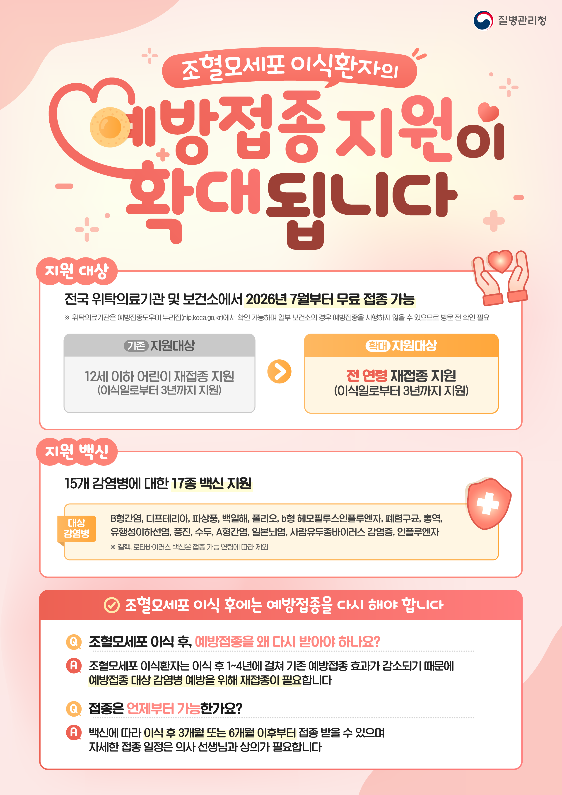

용산구, 조혈모세포이식환자 백신 지원 전 연령으로 확대
연령 제한 폐지, 최대 3년간 17종 백신 무료 접종

[시사포커스 / 김재록 기자] 서울 용산구(구청장 김경대)는 조혈모세포이식환자의 면역력 증진과 경제적 부담 완화를 위해 이식 후 국가예방접종 지원 대상을 기존 만 12세 이하에서 전 연령으로 확대한다고 29일 밝혔다. 이번 확대 조치는 7월 27일부터 시행됐으며, 2026년 신규 이식환자를 대상으로 이식일로부터 최대 3년간 17종의 백신 접종을 지원한다. 조혈모세포이식환자는 이식 과정에서 시행되는 고강도 전처치요법과 면역억제 치료로 인해 기존 면역력이 감소하거나 소실될 수 있어 감염병 예방을 위한 재접종이 필요하다.
지원 대상 백신은 15개 감염병을 예방하는 17종으로, B형간염, 디프테리아·파상풍·백일해, 폴리오, b형 헤모필루스인플루엔자, 폐렴구균, 홍역·유행성이하선염·풍진, 수두, A형간염, 일본뇌염, 사람유두종바이러스(HPV), 인플루엔자 등이 포함된다. 접종은 백신 종류에 따라 이식 후 최소 3개월 또는 6개월 이후부터 가능하며, 전국 국가예방접종 위탁의료기관에서 접종받을 수 있다. 용산구 내에는 59개소의 위탁의료기관이 있으며, 가까운 기관과 접종 가능한 백신 종류는 예방접종도우미 누리집(nip.kdca.go.kr)에서 확인 가능하다. 다만 사람유두종바이러스(HPV) 백신은 허가사항에 따라 남녀 모두 26세까지만 지원되며, 이식을 받은 의료기관이 아닌 다른 기관에서 처음 접종할 경우에는 이식일을 확인할 수 있는 진단서·수술확인서 등 서류를 제출해야 한다.
김경대 용산구청장은 "이식 후 회복 과정에 있는 환자들에게 예방접종 비용은 적지 않은 부담이 될 수 있다"며 "이번 지원 확대가 치료 이후의 회복까지 함께 책임지는 따뜻한 행정이 되기를 바란다"고 말했다. 이어 "앞으로도 감염병 예방은 물론, 구민 누구나 필요한 보건의료 서비스를 놓치지 않도록 지원체계를 강화해 나가겠다"고 밝혔다. 환자의 연령과 개인별 면역 상태를 고려해 반드시 담당 의료진과 상담한 뒤 접종 시기를 결정해야 하며, 자세한 문의는 용산구 건강관리과(02-2199-8200)로 하면 된다.